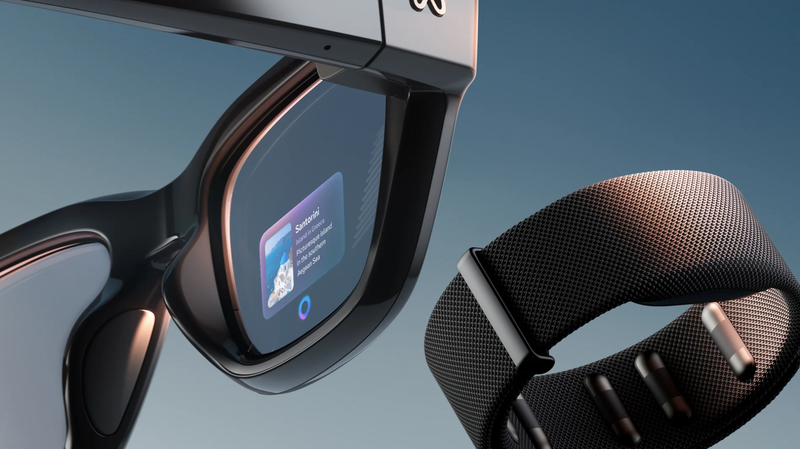

🤫
Interacción discreta
Funciona con la mano caída o en el bolsillo. No hay que hablar en voz alta ni levantar el brazo, algo muy útil en sitios públicos.
Una pulsera que lee las señales eléctricas de los músculos de tu muñeca para que controles un ordenador con un gesto casi imperceptible.
La Neural Band se presentó en septiembre de 2025 junto a las gafas Meta Ray-Ban Display y es, hasta donde sé, la primera pulsera de electromiografía de superficie (sEMG) que llega al público general como dispositivo de entrada de un producto de consumo. Me parece muy relevante para la IPO porque cambia el canal de interacción: ya no se teclea, no se toca una pantalla ni hace falta que una cámara vea las manos. La intención de movimiento se captura directamente en la muñeca.
Sigue en plena actualidad: en 2026 ha recibido escritura “en el aire” con el dedo sobre cualquier superficie, y Meta ya ha enseñado pruebas fuera de las gafas, como un concepto de control dentro del coche junto a Garmin.
Funciona con la mano caída o en el bolsillo. No hay que hablar en voz alta ni levantar el brazo, algo muy útil en sitios públicos.
Al medir el músculo y no la imagen, no depende de la iluminación ni de que la mano esté a la vista, y no exige una pantalla táctil.
Detecta señales muy pequeñas, por lo que puede abrir la puerta a personas con movilidad reducida. Hay investigación en marcha con la Universidad de Utah.
Los gestos son micromovimientos (pellizcos, deslizamientos del pulgar), mucho menos cansados que alzar el brazo frente a una cámara.
Cuando queremos mover un dedo, el cerebro envía una orden que activa las neuronas motoras de la muñeca y el antebrazo, y eso genera una pequeñísima señal eléctrica. Los sensores de la pulsera la registran, un modelo de inteligencia artificial la interpreta y la convierte en una acción para las gafas: seleccionar, desplazarse, volver atrás, ajustar el volumen o, desde las últimas actualizaciones, escribir.
Se vende junto con las gafas Meta Ray-Ban Display (799 $ en su lanzamiento en EE. UU.), y por ahora está pensada para funcionar con ellas, no como un accesorio universal para cualquier equipo.

Cada generación de dispositivos de entrada ha intentado acercar la interacción a lo que hacemos de forma natural. La Neural Band es el último eslabón de una cadena que parte de la tarjeta perforada.
La entrada era indirecta y por lotes; después llegó el teclado, que permitía escribir comandos en tiempo real.
Límite: obliga a memorizar órdenes y a tener las manos en un sitio fijo.
Inventado por Douglas Engelbart y popularizado con las interfaces gráficas. Introduce la manipulación directa: señalar y hacer clic.
Límite: necesita una mesa y una pantalla frente a nosotros.
El smartphone elimina el intermediario: se toca lo que se ve, con gestos como pellizcar o deslizar.
Límite: hay que sostener y mirar un dispositivo; no sirve con gafas ni con las manos ocupadas.
Se controla sin tocar nada, interpretando la imagen del cuerpo o las manos.
Límite: depende de la luz, requiere campo visual despejado y obliga a gestos amplios.
La voz libera las manos, y el brazalete Myo de Thalmic Labs ya probó la electromiografía en el antebrazo.
Límite: la voz es poco privada y falla con ruido; Myo era impreciso y acabó retirándose del mercado.
Meta adquirió la startup CTRL-labs en 2019 y, tras años de investigación con miles de participantes, lanzó en 2025 su pulsera sEMG con IA, más precisa y cómoda.
Se añaden la escritura con el dedo sobre cualquier superficie y pruebas en otros entornos como el coche. Es una interacción continua, privada y sin cámaras.
| Dispositivo | Requiere superficie / pantalla | Funciona con la mano oculta | Privacidad |
|---|---|---|---|
| Teclado | Sí | No | Alta |
| Ratón | Sí | No | Alta |
| Pantalla táctil | Sí | No | Media |
| Cámara de gestos | No (pero necesita visión) | No | Baja |
| Voz | No | Sí | Baja |
| Neural Band | No | Sí | Alta |